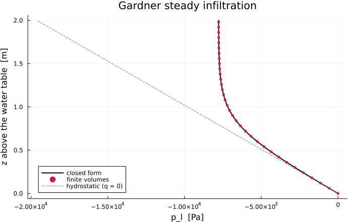

Steady Infiltration Above a Water Table
The unsaturated counterpart of the poroelasticity benchmarks. Terzaghi and Mandel verify the coupled mechanics; this one verifies the Richards path — the retention and relative permeability curves of the constitutive layer, the VoronoiFVM flux with gravity, and the ability to reach a steady state — against a solution that can be written down exactly.
Why this case has a closed form
Richards' equation is nonlinear because $k_{rl}$ depends on the unknown. For Gardner's exponential law (Gardner, 1958) the nonlinearity is removable: a change of variable turns the steady equation into a linear first-order ODE.
Take $z$ upward, $p_g = 0$ so that $p_c = -p_l$, and write the vertical Darcy flux (positive upward) as
\[q = -K_s\,k_{rl}(p_c)\left(\frac{\mathrm{d}p_l}{\mathrm{d}z} + \rho_l g\right), \qquad K_s = \frac{k_\text{int}}{\mu_l}\]
At steady state $q$ is constant through the column. With $k_{rl} = \exp(-\alpha p_c) = \exp(\alpha p_l)$ and the substitution $v = \exp(\alpha p_l)$,
\[\frac{\mathrm{d}v}{\mathrm{d}z} = \alpha v \frac{\mathrm{d}p_l}{\mathrm{d}z} = \alpha v \left(-\frac{q}{K_s v} - \rho_l g\right) = -\frac{\alpha q}{K_s} - \alpha \rho_l g\, v\]
which is linear in $v$. Integrating from a water table at $z = 0$ where $p_l = 0$, hence $v = 1$:
\[\boxed{\;p_l(z) = \frac{1}{\alpha} \ln\!\left[(1 + Q)\,e^{-\beta z} - Q\right]\;} \qquad \beta = \alpha \rho_l g, \quad Q = \frac{q}{K_s \rho_l g}\]
$Q$ is the flux scaled by the saturated gravity-driven flux; it is negative for downward infiltration. For upward flux (evaporation) the bracket vanishes at a finite height — the water table can only sustain evaporation up to that depth — which is the physical content of Gardner's original paper.
include("richards_common.jl")PoroMechanics.bcondition!Solving
The column is marched from hydrostatic equilibrium until the profile stops moving. The storage term is what makes that march possible; at the steady state it drops out, which is why the answer depends on the relative permeability alone.
"""
run_gardner(; m, N, t_end, n_save)
Return `(m, z, p_l)`: the node heights and the steady liquid pressure profile.
"""
function run_gardner(; m = GardnerColumn(), N = 200, t_end = 4.0e7, n_save = 40)
grid = simplexgrid(range(0.0, m.L; length = N + 1))
sys = fvm_system(m, grid)
# Start from hydrostatic equilibrium, p_l = -ρ g z, which is the zero-flux profile.
inival = unknowns(sys)
z0 = grid[Coordinates][1, :]
inival[1, :] .= -m.rho_l * abs(m.gravite) .* z0
inival[1, 1] = m.p_g
ctrl = VoronoiFVM.SolverControl(;
Δt = 1.0,
Δt_max = t_end / 20,
Δu_opt = 2.0e3,
reltol = 1.0e-9,
abstol = 1.0e-11,
handle_exceptions = true,
verbose = false,
)
tsol = solve(sys; inival, times = range(0.0, t_end; length = n_save + 1), control = ctrl)
return m, z0, tsol[1, :, end], tsol
end
model, z, p_num, tsol = run_gardner()(Main.GardnerColumn{Gardner{Float64}, GardnerKrl{Float64}}(1.0e-12, 0.001, 1000.0, -9.81, 0.35, 0.0, 0.0005, -2.0e-7, 2.0, Gardner{Float64}(0.0005), GardnerKrl{Float64}(0.0005)), [0.0, 0.01, 0.02, 0.03, 0.04, 0.05, 0.06, 0.07, 0.08, 0.09 … 1.91, 1.92, 1.93, 1.94, 1.95, 1.96, 1.97, 1.98, 1.99, 2.0], [2.0e-37, -96.05139304335133, -192.00205363665168, -287.8471449459521, -383.58160957412747, -479.2001606749401, -574.6972728281846, -670.0671726824655, -765.3038293739888, -860.4009447317623 … -7777.501550946244, -7777.892357088297, -7778.264524080296, -7778.618937673411, -7778.956441827587, -7779.277840655311, -7779.583900277594, -7779.875350595877, -7780.1528869834565, -7780.417171899866], [0.0 -98.10000000000001 … -19521.9 -19620.0;;; 3.3260851035697523e-54 -98.10000000000001 … -19347.896347602607 -17504.30950849121;;; 3.018430260648203e-54 -98.10000000000001 … -19092.51319093697 -16607.434775196496;;; … ;;; 2.0e-37 -96.05139304335133 … -7780.1528869834565 -7780.417171899866;;; 2.0e-37 -96.05139304335133 … -7780.1528869834565 -7780.417171899866;;; 2.0e-37 -96.05139304335133 … -7780.1528869834565 -7780.417171899866])Results
using Plots
p_ref = [gardner_profile(model, zi) for zi in z]
err_L2 = norm(p_num .- p_ref) / norm(p_ref)
err_Linf = maximum(abs.(p_num .- p_ref))
Q = model.q_top / (saturated_conductivity(model) * model.rho_l * abs(model.gravite))
@printf("Gardner α : %.3e Pa⁻¹\n", model.alpha)
@printf("Scaled flux Q : %.6f (negative = downward infiltration)\n", Q)
@printf("p_l at the top : %.4e Pa (reference %.4e Pa)\n", p_num[end], p_ref[end])
@printf("relative L2 error: %.3e\n", err_L2)
@printf("L∞ error : %.4f Pa\n", err_Linf)Gardner α : 5.000e-04 Pa⁻¹
Scaled flux Q : -0.020387 (negative = downward infiltration)
p_l at the top : -7.7804e+03 Pa (reference -7.7804e+03 Pa)
relative L2 error: 8.709e-06
L∞ error : 0.1015 PaSteady profile
plt = plot(;
xlabel = "p_l [Pa]", ylabel = "z above the water table [m]",
title = "Gardner steady infiltration",
legend = :bottomleft, size = (700, 440),
)
zfine = range(0, model.L; length = 400)
plot!(plt, [gardner_profile(model, zi) for zi in zfine], zfine; lw = 2, color = :black, label = "closed form")
plot!(
plt, p_num[1:6:end], z[1:6:end];
seriestype = :scatter, ms = 3, mswidth = 0, color = :crimson, label = "finite volumes",
)
plot!(
plt, -model.rho_l * abs(model.gravite) .* zfine, zfine;
ls = :dash, color = :grey, label = "hydrostatic (q = 0)",
)
plt
Convergence with the mesh
Each halving of the mesh size divides the error by four: the two-point flux finite volume scheme is second order on a uniform grid, and the measurement says so to within 1 %.
println(" nodes | relative L2 error | ratio")
println("-"^42)
prev = NaN
for N in (25, 50, 100, 200, 400)
mm, zz, pp, _ = run_gardner(; N = N)
ref = [gardner_profile(mm, zi) for zi in zz]
e = norm(pp .- ref) / norm(ref)
@printf(" %5d | %.3e | %s\n", N + 1, e, isnan(prev) ? "—" : @sprintf("%.2f", prev / e))
global prev = e
end nodes | relative L2 error | ratio
------------------------------------------
26 | 5.513e-04 | —
51 | 1.386e-04 | 3.98
101 | 3.478e-05 | 3.99
201 | 8.709e-06 | 3.99
401 | 2.179e-06 | 4.00Notes
- The steady state does not depend on the retention curve — only on $k_{rl}$. The retention curve controls how the column gets there, not where it settles, which is why the closed form involves $\alpha$ of the permeability alone.
- Where the closed form stops existing — for upward flux the bracket $(1+Q)e^{-\beta z} - Q$ reaches zero at a finite height: a water table can only feed evaporation down to a limited depth.
gardner_profilereturnsNaNthere rather than pretending. - Not a fitting curve — Gardner's exponential law is chosen here because it makes the steady equation integrable, not because it describes real soils well. For those,
VanGenuchtenis the curve the other examples use.